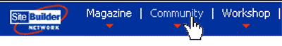
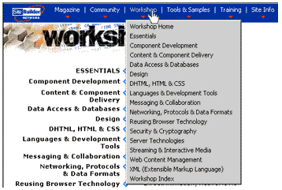
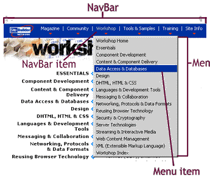
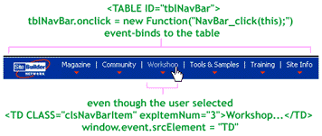

|
| ||
|
| ||
Robert Carter
MSDN Online Writer
George Young
Web Developer Engineer
MSDN Online
Updated: February 16, 1999
 Download the source code for a sample NavBar site (zipped, 16.2K) (see readme.txt for instructions).
Download the source code for a sample NavBar site (zipped, 16.2K) (see readme.txt for instructions).
Editor's note: This article, recently updated to reflect version 2 of the MSDN Online Web site's NavBar, is the first part of a series describing the code implementation for the MSDN Online redesign launched in June and July of 1998. If you haven't yet, you might want to read the introduction, A Tale of Two Web Teams: Touring the Redesign Code.
Contents
Introduction
NavBar Functionality
Building the Menu
Populate the Menus
Over, on, and What to Display
Which <TD> Are We in Again?
Playing Show and Hide
Event Caching
Summary
Other parts in this series
Introduction and Overview
NavFrame: Selective Frame Activation
Other Special Features and Hacks
As Robert is rapidly learning (much to his dismay), coders rarely leave well-enough alone. (Truth be told, he's only dismayed insofar as his articles rapidly become obsolete; on the upside, the code keeps getting better.) Such is the case with NavBar, the snappy navigation aid that appears across the top of all MSDN Online pages.
This article, like the code it describes, is a complete re-working of our earlier release. If you downloaded the sample we released a few weeks back, and were confused because the sample and the article that described it seemed such different beasts, you can now rest easy. With this update, we'll step through NavBar's functionality again, and then discuss our latest coding practices in the context of actions users take on a hypothetical MSDN Online page.
First, let's revisit what NavBar is and does. NavBar is our site-wide navigation tool, the conduit to reach all the major areas (and sub-areas) of MSDN Online, including Workshop, Magazine, Member Community, Tools & Samples, and Training. The final option on NavBar, Site Info, takes users to pages that orient them to MSDN Online and its search and index pages.
We intentionally configured the user interface to mimic Windows menu-based applications. Simply mousing over areas cause them to turn light blue (as opposed to the box that appears around menu items in Windows applications).

Figure 1. Mousing over the MSDN Online NavBar
Clicking on a NavBar item causes the menu it contains to drop down, revealing second-level areas. The chosen NavBar item changes to light gray.

Figure 2. Clicking a NavBar item causes a drop-down menu to appear
As with Windows applications, once you've clicked on a NavBar item and opened it, moving the mouse along the NavBar will cause each navbar item to display its menu contents without requiring another mouse click. (Go ahead, try it.) Moving the mouse outside the NavBar or the exposed menu drop-down has no effect (the menu stays just where it is) unless you click again, which will cause the menu to close.
Moving the mouse down the exposed menu will cause each highlighted entry to be banded in navy blue (the text converts to white to remain visible against the dark background). Note that the whole row is banded in navy rather than just the text, which we accomplish by placing each entry inside its own <DIV> tag. Clicking on an entry in the menu sends you to its associated area or page.

Figure 3. Highligted NavBar items with terminology call-outs
Before we go much further, we should settle on some terminology. As Figure 3 shows, NavBar is the entire table colored in royal blue. You click on (or mouse over) a NavBar item. Clicking on a NavBar item opens a menu. Each of the elements within the menu are referred to as menu items. While this may sound pedantic, it is easy to get confused when we get into describing the code and its page functionality -- and the code is complex enough without getting tripped up by terminology issues.
Browsers that aren't capable of displaying the NavBar Dynamic HTML (DHTML) -- essentially, any browser that isn't Internet Explorer 4.0 and above on Windows or UNIX -- are sent a different set of code. Although NavBar looks the same, clicking on one of the NavBar items doesn't display the drop-down menu; instead, we send the user to the default page for each section.
We determine which version of NavBar to send to a browser through server-side sniffing. The sniffing code is embedded in browdata.inc (which we'll describe more fully in our forthcoming update of NavFrame and NavLinks). Each version of NavBar, DHTML and down-level, is placed in a one-row table. From there, the similarities end. We will spend the bulk of our time talking about the DHTML version of NavBar; we leave the down-level version for you to figure out on your own (it's easy enough for even Robert to grasp).
The include file navbar.inc, which is inserted into every Web Workshop document from inside another include file, doctop.inc, performs a conditional test to determine whether the browser gets sent navbar-gb.inc, which contains our DHTML version of NavBar, or navbar-ob.inc, which includes the down-level, standard-HTML version. Both versions house NavBar in a table. In the down-level table, instead of each cell containing a hyperlinked graphic, as we did in version 1.0, we cut NavBar file size by 50 percent and saved four trips to the server by sending down a single-image client-side image map.
<%
if (oBD.getsNavBar)
{
%>
<!--#include virtual='/msdn-online/shared/inc/navbar-gb.inc' -->
<%
}
else
{
%>
<!--#include virtual='/msdn-online/shared/inc/navbar-ob.inc' -->
<%
}
%>
In the up-level version, only the MSDN Online logo and the red triangles are sent down as graphics; all the other table entries are text. We use CSS class names to display the text entries as different colors for each of the states a NavBar item can assume (default state [white], when a user is mousing over a NavBar item [light blue], and when the menu associated with a NavBar item is displayed [gray]). In addition, the state information represented by the CSS class names helps us decide what actions to take in script. Below is a table cell for the DHTML version of NavBar:
<TD CLASS="clsNavBarItem" expItemNum="1"> Magazine<BR> <IMG HEIGHT="4" WIDTH="7" BORDER="0" src="/msdn-online/shared/navbar/graphics/arrow.gif"> </TD>
Each NavBar item is given a class and a uniquely numbered expItemNum expando property. Expando properties, which are unique to JScript® and Internet Explorer 4.0 and above, let us create our own properties for an object (in this case, the TD object), and assign them values if we want.
The navmenus.inc file, which contains the contents of the menus, is loaded for DHTML-capable browsers from a conditional test in footer.inc. The footer.inc file, as its name implies, is an include file inserted at the end of the document we're sending from the server. The navmenus.inc file is simply a series of nested <DIV> tags. Each upper-level <DIV> defines a menu, specifies an ID and a class, binds its onmouseover() and onmouseout() events to our Menu_hover() function, and its onclick() event to our Menu_click() function. The second-level <DIV>s, which define the menu items, contain the menu item text and the URL to which the menu item points.
<DIV ID="divMenu1" CLASS="clsMenu" ONMOUSEOVER="Menu_hover();" ONMOUSEOUT="Menu_hover();" ONCLICK="Menu_click();"> <DIV expURL="/voices/default.asp">Magazine Home</DIV> <DIV expURL="/voices/jane.asp">Ask Jane</DIV> <DIV expURL="/voices/dude.asp">DHTML Dude</DIV> . . . </DIV>
The three event-handler functions are processed on the client side, because they respond to events that occur within the browser. We load them in a script SRC file from footer.inc:
<%
if (oBD.getsNavBar)
{
Response.Write('<SCRIPT LANGUAGE="JavaScript" src="navbar.js"></script> \n');
}
%>
(oBD.getsNavBar is part of our browser-sniffing code, which we'll discuss in a later article.)
Now that we've sent down all our data and functions, we can turn to how everything works together to control the NavBar display. Assume a user begins a session in Workshop. The page has just loaded, and no menus are open. The user mouses over the "Workshop" NavBar item, which looks like the following in HTML:
<TABLE ID="tblNavBar" BORDER="0" CELLPADDING="0" CELLSPACING="0">
<TR VALIGN="top">
.
.
.
<TD CLASS="clsNavBarItem" expItemNum="3">
Workshop
<BR>
<IMG HEIGHT="4" WIDTH="7" BORDER="0"
src="/msdn-online/shared/navbar/graphics/arrow.gif">
</TD>
.
.
.
</TR>
</TABLE>
Note that the ID of the <TABLE> tag is "tblNavBar", the class of the Workshop <TD> is initially "clsNavBarItem", and that the expando property expItemNum is "3".
Just a little more stage-setting: At the bottom of navbar.js, we've inserted the event-binding code shown below:
if ("object" == typeof(tblNavBar))
{
tblNavBar.onmouseover = new Function("NavBar_mouseover(this);");
tblNavBar.onmouseout = new Function("NavBar_mouseout(this);");
tblNavBar.onselectstart = new Function("return false;");
tblNavBar.onclick = new Function("NavBar_click(this);");
}
When the user mouses over the "Workshop" <TD> cell, its onmouseover() event is fired. Because we're dealing with an Internet Explorer 4.0 or higher browser, this event automatically "bubbles up" the document's hierarchy all the way to the document level (unless we specifically stop it from doing so by setting the window.event.cancelBubble property to "true"). So, bubbling up our page's hierarchy from the <TD>, we progress through <TR>, <TBODY>, and <TABLE>. Through the code snippet above, we handle the onmouseover() event at the <TABLE> level, where we call the function NavBar_mouseover().
What's more, we use the new Function() statement to pass a parameter to the NavBar_mouseover() event handler. In this case, we use the keyword this to pass a reference to the containing table.

Figure 4. Event-binding to the entire NavBar table when the TD element onclick() event fires
Now we can step into NavBar_mouseover().
function NavBar_mouseover(eContainer)
{
var esrc = findtd(window.event.srcelement,econtainer);
if (FindTD(window.event.fromElement,eContainer) != eSrc)
{
if ("clsNavBarItem" == eSrc.className)
{
eSrc.className = "clsNavBarItemOver";
if (null != eMenuShown)
{
HideMenu();
ShowMenu(eSrc);
}
}
}
}
The this keyword points to the table. We receive that pointer in NavBar_mouseover() and call it eContainer. Now we want to figure out if on the mouseover() we moused into a different <TD> than we were in before. The first two lines of NavBar_mouseover() do that. The first one figures out which <TD> we moused into; the second, which <TD> we came from (and whether they're the same). We use the FindTD() function to do this.
If you look at how the NavBar table is constructed, you'll realize that the user could have moused over the "Workshop" text or the red triangle image. FindTD() iterates through the table hierarchy (the same way our event bubble did) until it encounters and returns the containing TD object. In the next line, we call FindTD() again, this time passing the fromElement property as a parameter to gather information about where the mouse came from (we don't hop to for any old mouseover() event!). If the user moved the mouse from the "Workshop" NavBar item graphic to the "Workshop" NavBar item text, or vice versa, we don't want to do anything, because as far as we're concerned, the user is still in the same NavBar item.
function FindTD(eSrc,eContainer)
{
while (eContainer.contains(eSrc))
{
if ("TD" == eSrc.tagName) return eSrc;
esrc = esrc.parentelement;
}
return false;
}
If it turns out that we came from outside the "Workshop" NavBar item entirely, we test to see if the element being moused over has a className of "clsNavBarItem" (we moused over "Workshop", which does). If yes, we re-assign "clsNavBarItemOver" as the class name. If nothing else happens in the rest of NavBar_mouseover(), this reassignment to "clsNavBarItemOver" will cause the text to display in light blue.
But we're not done yet. We have one more conditional to wade through. If the variable eMenuShown is not null, which it wouldn't be if a menu were already open, we call HideMenu() to close the menu that was open, and then ShowMenu() to open the menu associated with the NavBar item being moused over. (Remember, if a menu is open and the user starts mousing over other NavBar menu items,we want the menus to follow the mouse around, opening menus as they are moused over -- similar to what happens with most Windows applications.)
If we're in this part of NavBar_mouseover(), a menu was open somewhere, we hid it (and reassigned all its relevant elements and classes to their default values), and now we need to open the menu associated with the NavBar item the mouse is currently over. In ShowMenu(), the menu to display is identified by concatenating the expItemNum expando property (an integer between 1 and 6) to the text string "divMenu", which identifies the menu associated with each NavBar item loaded from navmenus.inc. We assign eSrc to eNavBarItemShown, change the class name of eNavBarItemShown to "clsNavBarItemShown" (which has the effect of changing the "Workshop" text to gray), and make our menu visible.
The HideMenu() and ShowMenu() functions primarily change the visibility of the relevant menu, and re-assign any class names or variable values.
function HideMenu()
{
eMenuShown.style.visibility = "hidden";
eMenuShown = null;
eNavBarItemShown.className = "clsNavBarItem";
eNavBarItemShown = null;
UncacheAndRebind();
}
function ShowMenu(eSrc)
{
eMenuShown = document.all["divMenu" + eSrc.expItemNum];
eNavBarItemShown = eSrc;
eNavBarItemShown.className = "clsNavBarItemShown";
if (null != eMenuShown) eMenuShown.style.visibility = "visible";
CacheAndBind();
}
In the last line of both HideMenu() and ShowMenu(), we perform another feat of code derring-do that we refer to as event caching.
Because we're trying to simulate the behavior of Windows applications when menus are already open, we want to close an open menu if one of three additional things happens:
To do this, we have to handle three events: document.onkeypress, document.onclick, and window.onblur. We have to be careful, though, because those are global events that may already be being handled by code specific to the document itself. Because NavBar is included in thousands of documents (not all of them authored by us), we can't know for sure that we aren't interfering with already-existing code. We deal with this uncertainty by event caching.
In a nutshell, event caching lets us suspend any default event-handling that may already exist in favor of our own event handlers. So when (and only when) a menu is open, and only until the time when the menu is closed, we "take over" these three global events. Before taking over, we "cache" any event-handlers that may have been bound by the hosting document, so that we may restore them once the menu is closed.
In CacheAndBind(), we store whatever handler was called when document.onclick fired in window.CachedClick, document.onkeypress in window.CachedKeypress, and window.onblur in window.CachedBlur (we store each event, whether a document- or window-level event, as a window object variable to make it globally available).
function CacheAndBind()
{
window.CachedClick = document.onclick;
window.CachedKeypress = document.onkeypress;
window.CachedBlur = window.onblur;
document.onclick = document_click;
document.onkeypress = document_keypress;
window.onblur = window_blur;
}
Once we've stashed the three default handlers, we can bind our own handlers, document_click, document_keypress, and window_blur to those three pesky global events. We do this in the last three lines of CacheAndBind().
UncacheAndRebind(), called at the end of HideMenu(), restores the original event handlers assigned to the global events.
function UncacheAndRebind()
{
document.onclick = window.CachedClick;
document.onkeypress = window.CachedKeypress;
window.onblur = window.CachedBlur;
}
Note We should be totally honest and state that we haven't duplicated all the functionality of Windows menus in NavBar yet. For instance, if you hit the TAB key in NavBar once a menu is open, you aren't moved down the menu items one at a time. The arrow keys aren't functional at all. But there is almost full Windows menu functionality in NavFrame. Really.
NavBar was developed to provide access to all the major areas of the MSDN Online . MSDN Online visitors using Internet Explorer 4.0 and above browsers on the Windows and UNIX platforms can take full advantage of all of the DHTML features NavBar provides. Users of other browsers are given fully functional navigation, albeit without the DHTML drop-down menu displays. For those interested in adapting NavBar to their site, or who want to review all the code in detail, a fully-functional download is made available from the top of this article.
Overall, we're pretty proud of NavBar. While version 1.0, which we wrote about earlier, worked pretty well, version 2.0 is a lot cleaner and more efficient. We encourage you to experiment with it, share any innovations or observations you come up with, or simply use to get an idea of the potential for DHTML and the like in your own work. Thanks for tuning in.
Did you find this material useful? Gripes? Compliments? Suggestions for other articles? Write us!
© 1999 Microsoft Corporation. All rights reserved. Terms of use.